<!DOCTYPE html>
<html xmlns="http://www.w3.org/1999/xhtml" lang="en" xml:lang="en"><head>

<meta charset="utf-8">
<meta name="generator" content="quarto-1.2.335">

<meta name="viewport" content="width=device-width, initial-scale=1.0, user-scalable=yes">


<title>Geospatial Mapping for Ornithology</title>
<style>
code{white-space: pre-wrap;}
span.smallcaps{font-variant: small-caps;}
div.columns{display: flex; gap: min(4vw, 1.5em);}
div.column{flex: auto; overflow-x: auto;}
div.hanging-indent{margin-left: 1.5em; text-indent: -1.5em;}
ul.task-list{list-style: none;}
ul.task-list li input[type="checkbox"] {
  width: 0.8em;
  margin: 0 0.8em 0.2em -1.6em;
  vertical-align: middle;
}
pre > code.sourceCode { white-space: pre; position: relative; }
pre > code.sourceCode > span { display: inline-block; line-height: 1.25; }
pre > code.sourceCode > span:empty { height: 1.2em; }
.sourceCode { overflow: visible; }
code.sourceCode > span { color: inherit; text-decoration: inherit; }
div.sourceCode { margin: 1em 0; }
pre.sourceCode { margin: 0; }
@media screen {
div.sourceCode { overflow: auto; }
}
@media print {
pre > code.sourceCode { white-space: pre-wrap; }
pre > code.sourceCode > span { text-indent: -5em; padding-left: 5em; }
}
pre.numberSource code
  { counter-reset: source-line 0; }
pre.numberSource code > span
  { position: relative; left: -4em; counter-increment: source-line; }
pre.numberSource code > span > a:first-child::before
  { content: counter(source-line);
    position: relative; left: -1em; text-align: right; vertical-align: baseline;
    border: none; display: inline-block;
    -webkit-touch-callout: none; -webkit-user-select: none;
    -khtml-user-select: none; -moz-user-select: none;
    -ms-user-select: none; user-select: none;
    padding: 0 4px; width: 4em;
    color: #aaaaaa;
  }
pre.numberSource { margin-left: 3em; border-left: 1px solid #aaaaaa;  padding-left: 4px; }
div.sourceCode
  {   }
@media screen {
pre > code.sourceCode > span > a:first-child::before { text-decoration: underline; }
}
code span.al { color: #ff0000; font-weight: bold; } /* Alert */
code span.an { color: #60a0b0; font-weight: bold; font-style: italic; } /* Annotation */
code span.at { color: #7d9029; } /* Attribute */
code span.bn { color: #40a070; } /* BaseN */
code span.bu { color: #008000; } /* BuiltIn */
code span.cf { color: #007020; font-weight: bold; } /* ControlFlow */
code span.ch { color: #4070a0; } /* Char */
code span.cn { color: #880000; } /* Constant */
code span.co { color: #60a0b0; font-style: italic; } /* Comment */
code span.cv { color: #60a0b0; font-weight: bold; font-style: italic; } /* CommentVar */
code span.do { color: #ba2121; font-style: italic; } /* Documentation */
code span.dt { color: #902000; } /* DataType */
code span.dv { color: #40a070; } /* DecVal */
code span.er { color: #ff0000; font-weight: bold; } /* Error */
code span.ex { } /* Extension */
code span.fl { color: #40a070; } /* Float */
code span.fu { color: #06287e; } /* Function */
code span.im { color: #008000; font-weight: bold; } /* Import */
code span.in { color: #60a0b0; font-weight: bold; font-style: italic; } /* Information */
code span.kw { color: #007020; font-weight: bold; } /* Keyword */
code span.op { color: #666666; } /* Operator */
code span.ot { color: #007020; } /* Other */
code span.pp { color: #bc7a00; } /* Preprocessor */
code span.sc { color: #4070a0; } /* SpecialChar */
code span.ss { color: #bb6688; } /* SpecialString */
code span.st { color: #4070a0; } /* String */
code span.va { color: #19177c; } /* Variable */
code span.vs { color: #4070a0; } /* VerbatimString */
code span.wa { color: #60a0b0; font-weight: bold; font-style: italic; } /* Warning */
</style>


<script src="geospatial-mapping-ornith_files/libs/clipboard/clipboard.min.js"></script>
<script src="geospatial-mapping-ornith_files/libs/quarto-html/quarto.js"></script>
<script src="geospatial-mapping-ornith_files/libs/quarto-html/popper.min.js"></script>
<script src="geospatial-mapping-ornith_files/libs/quarto-html/tippy.umd.min.js"></script>
<script src="geospatial-mapping-ornith_files/libs/quarto-html/anchor.min.js"></script>
<link href="geospatial-mapping-ornith_files/libs/quarto-html/tippy.css" rel="stylesheet">
<link href="geospatial-mapping-ornith_files/libs/quarto-html/quarto-syntax-highlighting.css" rel="stylesheet" id="quarto-text-highlighting-styles">
<script src="geospatial-mapping-ornith_files/libs/bootstrap/bootstrap.min.js"></script>
<link href="geospatial-mapping-ornith_files/libs/bootstrap/bootstrap-icons.css" rel="stylesheet">
<link href="geospatial-mapping-ornith_files/libs/bootstrap/bootstrap.min.css" rel="stylesheet" id="quarto-bootstrap" data-mode="light">


</head>

<body class="fullcontent">

<div id="quarto-content" class="page-columns page-rows-contents page-layout-article">

<main class="content" id="quarto-document-content">

<header id="title-block-header" class="quarto-title-block default">
<div class="quarto-title">
<h1 class="title">Geospatial Mapping for Ornithology</h1>
</div>


<div class="quarto-title-meta">

    
  
    
  </div>
  

</header>

<section id="load-packages-well-use" class="level2">
<h2 class="anchored" data-anchor-id="load-packages-well-use">1) Load packages we’ll use</h2>
<div class="cell">
<div class="sourceCode cell-code" id="cb1"><pre class="sourceCode r code-with-copy"><code class="sourceCode r"><span id="cb1-1"><a href="#cb1-1" aria-hidden="true" tabindex="-1"></a><span class="fu">library</span>(tidyverse)</span></code><button title="Copy to Clipboard" class="code-copy-button"><i class="bi"></i></button></pre></div>
<div class="cell-output cell-output-stderr">
<pre><code>── Attaching packages ─────────────────────────────────────── tidyverse 1.3.2 ──
✔ ggplot2 3.4.1     ✔ purrr   1.0.1
✔ tibble  3.1.8     ✔ dplyr   1.1.0
✔ tidyr   1.3.0     ✔ stringr 1.5.0
✔ readr   2.1.3     ✔ forcats 1.0.0
── Conflicts ────────────────────────────────────────── tidyverse_conflicts() ──
✖ dplyr::filter() masks stats::filter()
✖ dplyr::lag()    masks stats::lag()</code></pre>
</div>
<div class="sourceCode cell-code" id="cb3"><pre class="sourceCode r code-with-copy"><code class="sourceCode r"><span id="cb3-1"><a href="#cb3-1" aria-hidden="true" tabindex="-1"></a><span class="fu">library</span>(ggmap)</span></code><button title="Copy to Clipboard" class="code-copy-button"><i class="bi"></i></button></pre></div>
<div class="cell-output cell-output-stderr">
<pre><code>ℹ Google's Terms of Service: &lt;]8;;https://mapsplatform.google.comhttps://mapsplatform.google.com]8;;&gt;
ℹ Please cite ggmap if you use it! Use `citation("ggmap")` for details.</code></pre>
</div>
<div class="sourceCode cell-code" id="cb5"><pre class="sourceCode r code-with-copy"><code class="sourceCode r"><span id="cb5-1"><a href="#cb5-1" aria-hidden="true" tabindex="-1"></a><span class="fu">library</span>(sf)</span></code><button title="Copy to Clipboard" class="code-copy-button"><i class="bi"></i></button></pre></div>
<div class="cell-output cell-output-stderr">
<pre><code>Linking to GEOS 3.11.0, GDAL 3.5.3, PROJ 9.1.0; sf_use_s2() is TRUE</code></pre>
</div>
<div class="sourceCode cell-code" id="cb7"><pre class="sourceCode r code-with-copy"><code class="sourceCode r"><span id="cb7-1"><a href="#cb7-1" aria-hidden="true" tabindex="-1"></a><span class="fu">library</span>(elevatr)</span>
<span id="cb7-2"><a href="#cb7-2" aria-hidden="true" tabindex="-1"></a><span class="fu">library</span>(raster)</span></code><button title="Copy to Clipboard" class="code-copy-button"><i class="bi"></i></button></pre></div>
<div class="cell-output cell-output-stderr">
<pre><code>Loading required package: sp

Attaching package: 'raster'

The following object is masked from 'package:dplyr':

    select</code></pre>
</div>
<div class="sourceCode cell-code" id="cb9"><pre class="sourceCode r code-with-copy"><code class="sourceCode r"><span id="cb9-1"><a href="#cb9-1" aria-hidden="true" tabindex="-1"></a><span class="fu">library</span>(marmap)</span></code><button title="Copy to Clipboard" class="code-copy-button"><i class="bi"></i></button></pre></div>
<div class="cell-output cell-output-stderr">
<pre><code>Registered S3 methods overwritten by 'adehabitatMA':
  method                       from
  print.SpatialPixelsDataFrame sp  
  print.SpatialPixels          sp  

Attaching package: 'marmap'

The following object is masked from 'package:raster':

    as.raster

The following object is masked from 'package:grDevices':

    as.raster</code></pre>
</div>
</div>
</section>
<section id="build-a-basemap" class="level2">
<h2 class="anchored" data-anchor-id="build-a-basemap">2) Build a basemap</h2>
<section id="a-using-a-satellite-image" class="level3">
<h3 class="anchored" data-anchor-id="a-using-a-satellite-image">a) …using a satellite image</h3>
<section id="register-google-api-key" class="level4">
<h4 class="anchored" data-anchor-id="register-google-api-key">Register Google API key</h4>
<p>To obtain an API key and enable services, go to <a href="https://mapsplatform.google.com" class="uri">https://mapsplatform.google.com</a>. (Also note that your API key should be kept secure, as sharing it publicly can open your account up to being compromised.)</p>
<p>My code chunk is hidden here, but the function to register your API key in an R session takes the form <code>register_google(key = "PERSONAL API KEY")</code>.</p>
</section>
<section id="extract-satellite-map-from-google-maps" class="level4">
<h4 class="anchored" data-anchor-id="extract-satellite-map-from-google-maps">Extract satellite map from Google Maps</h4>
<p>Right click on a Google Maps page to get coordinates. Also note that <em>longitude</em> comes first inside the coordinate parentheses.</p>
<div class="cell">
<div class="sourceCode cell-code" id="cb11"><pre class="sourceCode r code-with-copy"><code class="sourceCode r"><span id="cb11-1"><a href="#cb11-1" aria-hidden="true" tabindex="-1"></a>island_map <span class="ot">&lt;-</span> <span class="fu">get_map</span>(<span class="at">location =</span> <span class="fu">c</span>(<span class="sc">-</span><span class="fl">70.614</span>, <span class="fl">42.9885</span>),</span>
<span id="cb11-2"><a href="#cb11-2" aria-hidden="true" tabindex="-1"></a>                      <span class="at">zoom =</span> <span class="dv">16</span>,</span>
<span id="cb11-3"><a href="#cb11-3" aria-hidden="true" tabindex="-1"></a>                      <span class="at">maptype =</span> <span class="st">"satellite"</span>,</span>
<span id="cb11-4"><a href="#cb11-4" aria-hidden="true" tabindex="-1"></a>                      <span class="at">source =</span> <span class="st">"google"</span>,</span>
<span id="cb11-5"><a href="#cb11-5" aria-hidden="true" tabindex="-1"></a>                      <span class="at">color =</span> <span class="st">"color"</span>) <span class="co"># use "bw" for a black-and-white satellite image</span></span></code><button title="Copy to Clipboard" class="code-copy-button"><i class="bi"></i></button></pre></div>
<div class="cell-output cell-output-stderr">
<pre><code>ℹ &lt;]8;;https://maps.googleapis.com/maps/api/staticmap?center=42.9885,-70.614&amp;zoom=16&amp;size=640x640&amp;scale=2&amp;maptype=satellite&amp;language=en-EN&amp;key=xxxhttps://maps.googleapis.com/maps/api/staticmap?center=42.9885,-70.614&amp;zoom=16&amp;size=640x640&amp;scale=2&amp;maptype=satellite&amp;language=en-EN&amp;key=xxx]8;;&gt;</code></pre>
</div>
</div>
</section>
<section id="create-basemap" class="level4">
<h4 class="anchored" data-anchor-id="create-basemap">Create basemap</h4>
<p>When transforming the earth from its 3-D spherical shape to a 2-D shape, various distinct projections may be used depending on the scale and purposes of a given map. A Coordinate Reference System (CRS) defines how a specific two-dimensional projection relates to real places on the earth, and therefore is an important specification in geospatial mapping. Here, we use the most popular geodetic datum, WGS84 (World Geodetic System 1984), represented by the EPSG code 4326.</p>
<p>Within <code>get_map()</code>, feel free to experiment with the other <code>maptype</code> options for maps sourced from Google or Stamen, examples here: <a href="https://r-graph-gallery.com/324-map-background-with-the-ggmap-library.html" class="uri">https://r-graph-gallery.com/324-map-background-with-the-ggmap-library.html</a>.</p>
<div class="cell">
<div class="sourceCode cell-code" id="cb13"><pre class="sourceCode r code-with-copy"><code class="sourceCode r"><span id="cb13-1"><a href="#cb13-1" aria-hidden="true" tabindex="-1"></a>satmap <span class="ot">&lt;-</span> <span class="fu">ggmap</span>(island_map) <span class="sc">+</span></span>
<span id="cb13-2"><a href="#cb13-2" aria-hidden="true" tabindex="-1"></a>  <span class="fu">coord_sf</span>(<span class="at">crs =</span> <span class="dv">4326</span>) <span class="sc">+</span></span>
<span id="cb13-3"><a href="#cb13-3" aria-hidden="true" tabindex="-1"></a>  <span class="fu">theme</span>(<span class="at">axis.title =</span> <span class="fu">element_blank</span>())</span></code><button title="Copy to Clipboard" class="code-copy-button"><i class="bi"></i></button></pre></div>
<div class="cell-output cell-output-stderr">
<pre><code>Coordinate system already present. Adding new coordinate system, which will
replace the existing one.</code></pre>
</div>
<div class="sourceCode cell-code" id="cb15"><pre class="sourceCode r code-with-copy"><code class="sourceCode r"><span id="cb15-1"><a href="#cb15-1" aria-hidden="true" tabindex="-1"></a><span class="co"># note that the CRS is set in `coord_sf()` solely for the sake of formatting the axis labels; the satellite map is already set to WGS84/EPSG:4326.</span></span>
<span id="cb15-2"><a href="#cb15-2" aria-hidden="true" tabindex="-1"></a></span>
<span id="cb15-3"><a href="#cb15-3" aria-hidden="true" tabindex="-1"></a>satmap</span></code><button title="Copy to Clipboard" class="code-copy-button"><i class="bi"></i></button></pre></div>
<div class="cell-output-display">
<p>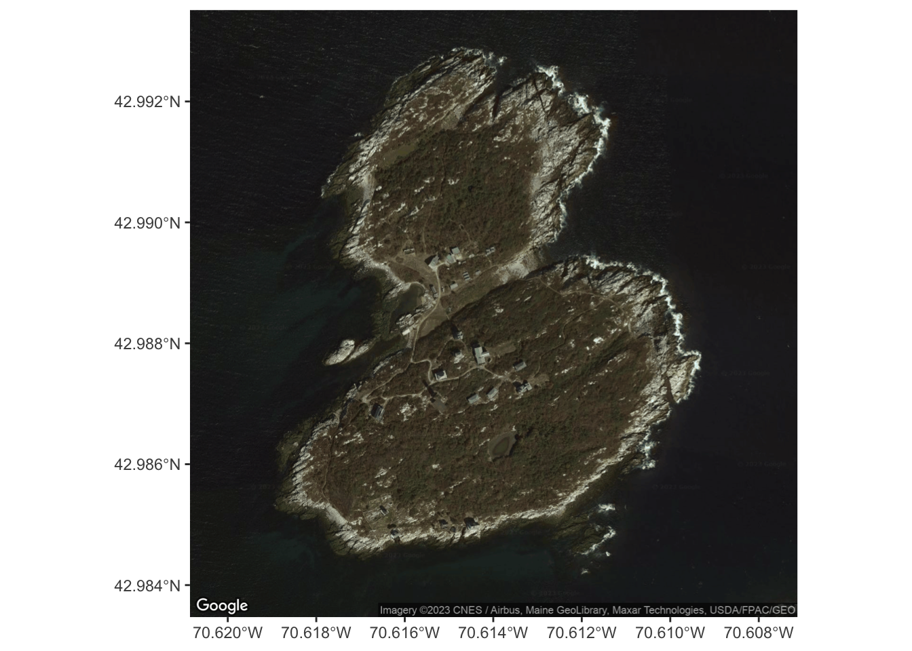</p>
</div>
</div>
</section>
<section id="zoom-in-a-bit-more-by-setting-coordinate-axis-limits" class="level4">
<h4 class="anchored" data-anchor-id="zoom-in-a-bit-more-by-setting-coordinate-axis-limits">Zoom in a bit more by setting coordinate axis limits</h4>
<div class="cell">
<div class="sourceCode cell-code" id="cb16"><pre class="sourceCode r code-with-copy"><code class="sourceCode r"><span id="cb16-1"><a href="#cb16-1" aria-hidden="true" tabindex="-1"></a>satmap <span class="ot">&lt;-</span> satmap <span class="sc">+</span></span>
<span id="cb16-2"><a href="#cb16-2" aria-hidden="true" tabindex="-1"></a>  <span class="fu">xlim</span>(<span class="fu">c</span>(<span class="sc">-</span><span class="fl">70.619</span>, <span class="sc">-</span><span class="fl">70.6094</span>)) <span class="sc">+</span></span>
<span id="cb16-3"><a href="#cb16-3" aria-hidden="true" tabindex="-1"></a>  <span class="fu">ylim</span>(<span class="fu">c</span>(<span class="fl">42.9842</span>, <span class="fl">42.9928</span>))</span></code><button title="Copy to Clipboard" class="code-copy-button"><i class="bi"></i></button></pre></div>
<div class="cell-output cell-output-stderr">
<pre><code>Scale for x is already present.
Adding another scale for x, which will replace the existing scale.
Scale for y is already present.
Adding another scale for y, which will replace the existing scale.</code></pre>
</div>
<div class="sourceCode cell-code" id="cb18"><pre class="sourceCode r code-with-copy"><code class="sourceCode r"><span id="cb18-1"><a href="#cb18-1" aria-hidden="true" tabindex="-1"></a>satmap</span></code><button title="Copy to Clipboard" class="code-copy-button"><i class="bi"></i></button></pre></div>
<div class="cell-output cell-output-stderr">
<pre><code>Warning: Removed 1 rows containing missing values (`geom_rect()`).</code></pre>
</div>
<div class="cell-output-display">
<p>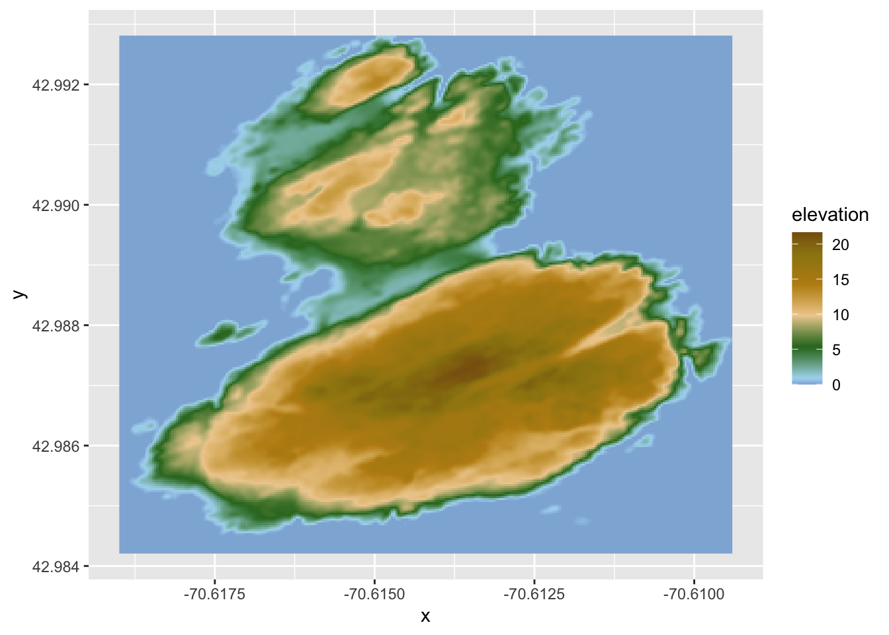</p>
</div>
</div>
</section>
</section>
<section id="b-using-topographic-data" class="level3">
<h3 class="anchored" data-anchor-id="b-using-topographic-data">b) …using topographic data</h3>
<p>The <code>elevatr</code> package provides access to raster elevation data from AWS Open Data <a href="https://registry.opendata.aws/terrain-tiles/">Terrain Tiles</a> and the Open Topography <a href="https://opentopography.org/developers#API">Global datasets API</a>.</p>
<section id="prepare-locations-parameter" class="level4">
<h4 class="anchored" data-anchor-id="prepare-locations-parameter">Prepare <code>locations</code> parameter</h4>
<p>This is the object that we will use to crop the global elevation data.</p>
<p>“Simple Features” is a commonly used set of GIS standards for storing and accessing data representing predominantly two-dimensional geographic features (e.g.&nbsp;points, lines, polygons).</p>
<div class="cell">
<div class="sourceCode cell-code" id="cb20"><pre class="sourceCode r code-with-copy"><code class="sourceCode r"><span id="cb20-1"><a href="#cb20-1" aria-hidden="true" tabindex="-1"></a><span class="co"># choose map GPS limits</span></span>
<span id="cb20-2"><a href="#cb20-2" aria-hidden="true" tabindex="-1"></a>min <span class="ot">&lt;-</span> <span class="fu">c</span>(<span class="sc">-</span><span class="fl">70.619</span>, <span class="fl">42.9842</span>)</span>
<span id="cb20-3"><a href="#cb20-3" aria-hidden="true" tabindex="-1"></a>max <span class="ot">&lt;-</span> <span class="fu">c</span>(<span class="sc">-</span><span class="fl">70.6094</span>, <span class="fl">42.9928</span>)</span>
<span id="cb20-4"><a href="#cb20-4" aria-hidden="true" tabindex="-1"></a></span>
<span id="cb20-5"><a href="#cb20-5" aria-hidden="true" tabindex="-1"></a><span class="co"># create dataframe for bounding box</span></span>
<span id="cb20-6"><a href="#cb20-6" aria-hidden="true" tabindex="-1"></a>loc <span class="ot">&lt;-</span> <span class="fu">rbind</span>(min, max) <span class="sc">%&gt;%</span></span>
<span id="cb20-7"><a href="#cb20-7" aria-hidden="true" tabindex="-1"></a>  <span class="fu">as.data.frame</span>() <span class="sc">%&gt;%</span></span>
<span id="cb20-8"><a href="#cb20-8" aria-hidden="true" tabindex="-1"></a>  <span class="fu">rename</span>(<span class="at">Long =</span> V1, <span class="at">Lat =</span> V2)</span>
<span id="cb20-9"><a href="#cb20-9" aria-hidden="true" tabindex="-1"></a></span>
<span id="cb20-10"><a href="#cb20-10" aria-hidden="true" tabindex="-1"></a><span class="co"># convert dataframe into simple features object for mapping</span></span>
<span id="cb20-11"><a href="#cb20-11" aria-hidden="true" tabindex="-1"></a>  <span class="co"># this serves to assign the data a CRS</span></span>
<span id="cb20-12"><a href="#cb20-12" aria-hidden="true" tabindex="-1"></a>loc_sf <span class="ot">&lt;-</span> <span class="fu">st_as_sf</span>(loc,</span>
<span id="cb20-13"><a href="#cb20-13" aria-hidden="true" tabindex="-1"></a>                   <span class="at">coords =</span> <span class="fu">c</span>(<span class="st">"Long"</span>, <span class="st">"Lat"</span>),</span>
<span id="cb20-14"><a href="#cb20-14" aria-hidden="true" tabindex="-1"></a>                   <span class="at">crs =</span> <span class="dv">4326</span>)</span></code><button title="Copy to Clipboard" class="code-copy-button"><i class="bi"></i></button></pre></div>
</div>
</section>
<section id="fetch-elevation-data" class="level4">
<h4 class="anchored" data-anchor-id="fetch-elevation-data">Fetch elevation data</h4>
<div class="cell">
<div class="sourceCode cell-code" id="cb21"><pre class="sourceCode r code-with-copy"><code class="sourceCode r"><span id="cb21-1"><a href="#cb21-1" aria-hidden="true" tabindex="-1"></a>elevation <span class="ot">&lt;-</span> <span class="fu">get_elev_raster</span>(<span class="at">locations =</span> loc_sf,</span>
<span id="cb21-2"><a href="#cb21-2" aria-hidden="true" tabindex="-1"></a>                             <span class="at">z =</span> <span class="dv">14</span>,</span>
<span id="cb21-3"><a href="#cb21-3" aria-hidden="true" tabindex="-1"></a>                             <span class="at">clip =</span> <span class="st">"bbox"</span>)</span></code><button title="Copy to Clipboard" class="code-copy-button"><i class="bi"></i></button></pre></div>
<div class="cell-output cell-output-stderr">
<pre><code>Mosaicing &amp; Projecting</code></pre>
</div>
<div class="cell-output cell-output-stderr">
<pre><code>Clipping DEM to bbox</code></pre>
</div>
<div class="cell-output cell-output-stderr">
<pre><code>Note: Elevation units are in meters.</code></pre>
</div>
<div class="sourceCode cell-code" id="cb25"><pre class="sourceCode r code-with-copy"><code class="sourceCode r"><span id="cb25-1"><a href="#cb25-1" aria-hidden="true" tabindex="-1"></a><span class="co"># convert raster data to point data for plotting</span></span>
<span id="cb25-2"><a href="#cb25-2" aria-hidden="true" tabindex="-1"></a>elevation <span class="ot">&lt;-</span> <span class="fu">rasterToPoints</span>(elevation)</span>
<span id="cb25-3"><a href="#cb25-3" aria-hidden="true" tabindex="-1"></a></span>
<span id="cb25-4"><a href="#cb25-4" aria-hidden="true" tabindex="-1"></a>elevation_df <span class="ot">&lt;-</span> <span class="fu">as.data.frame</span>(elevation) <span class="sc">%&gt;%</span></span>
<span id="cb25-5"><a href="#cb25-5" aria-hidden="true" tabindex="-1"></a>  <span class="fu">na.omit</span>()</span>
<span id="cb25-6"><a href="#cb25-6" aria-hidden="true" tabindex="-1"></a></span>
<span id="cb25-7"><a href="#cb25-7" aria-hidden="true" tabindex="-1"></a><span class="co"># rename the third column to make it easier to reference</span></span>
<span id="cb25-8"><a href="#cb25-8" aria-hidden="true" tabindex="-1"></a><span class="fu">colnames</span>(elevation_df)[<span class="dv">3</span>] <span class="ot">&lt;-</span> <span class="st">"elevation"</span></span></code><button title="Copy to Clipboard" class="code-copy-button"><i class="bi"></i></button></pre></div>
</div>
</section>
<section id="plot-topographic-map" class="level4">
<h4 class="anchored" data-anchor-id="plot-topographic-map">Plot topographic map</h4>
<div class="cell">
<div class="sourceCode cell-code" id="cb26"><pre class="sourceCode r code-with-copy"><code class="sourceCode r"><span id="cb26-1"><a href="#cb26-1" aria-hidden="true" tabindex="-1"></a><span class="fu">ggplot</span>() <span class="sc">+</span></span>
<span id="cb26-2"><a href="#cb26-2" aria-hidden="true" tabindex="-1"></a>  <span class="fu">geom_raster</span>(<span class="at">data =</span> elevation_df, </span>
<span id="cb26-3"><a href="#cb26-3" aria-hidden="true" tabindex="-1"></a>            <span class="fu">aes</span>(<span class="at">x =</span> x, <span class="at">y =</span> y, <span class="at">fill =</span> elevation))</span></code><button title="Copy to Clipboard" class="code-copy-button"><i class="bi"></i></button></pre></div>
<div class="cell-output-display">
<p></p>
</div>
</div>
</section>
<section id="change-colour-scale" class="level4">
<h4 class="anchored" data-anchor-id="change-colour-scale">Change colour scale</h4>
<div class="cell">
<div class="sourceCode cell-code" id="cb27"><pre class="sourceCode r code-with-copy"><code class="sourceCode r"><span id="cb27-1"><a href="#cb27-1" aria-hidden="true" tabindex="-1"></a><span class="co"># set all sea level points to the same value to create uniform background</span></span>
<span id="cb27-2"><a href="#cb27-2" aria-hidden="true" tabindex="-1"></a><span class="cf">for</span>(i <span class="cf">in</span> <span class="dv">1</span><span class="sc">:</span><span class="fu">nrow</span>(elevation_df)) {</span>
<span id="cb27-3"><a href="#cb27-3" aria-hidden="true" tabindex="-1"></a>  <span class="cf">if</span>(elevation_df<span class="sc">$</span>elevation[i] <span class="sc">&lt;=</span> <span class="fl">0.1</span>) {</span>
<span id="cb27-4"><a href="#cb27-4" aria-hidden="true" tabindex="-1"></a>    elevation_df<span class="sc">$</span>elevation[i] <span class="ot">=</span> <span class="dv">0</span></span>
<span id="cb27-5"><a href="#cb27-5" aria-hidden="true" tabindex="-1"></a>  }</span>
<span id="cb27-6"><a href="#cb27-6" aria-hidden="true" tabindex="-1"></a>}</span>
<span id="cb27-7"><a href="#cb27-7" aria-hidden="true" tabindex="-1"></a></span>
<span id="cb27-8"><a href="#cb27-8" aria-hidden="true" tabindex="-1"></a>elevmap <span class="ot">&lt;-</span> <span class="fu">ggplot</span>() <span class="sc">+</span></span>
<span id="cb27-9"><a href="#cb27-9" aria-hidden="true" tabindex="-1"></a>  <span class="fu">geom_raster</span>(<span class="at">data =</span> elevation_df, </span>
<span id="cb27-10"><a href="#cb27-10" aria-hidden="true" tabindex="-1"></a>            <span class="fu">aes</span>(<span class="at">x =</span> x, <span class="at">y =</span> y, <span class="at">fill =</span> elevation)) <span class="sc">+</span></span>
<span id="cb27-11"><a href="#cb27-11" aria-hidden="true" tabindex="-1"></a>  <span class="co"># change colour scale</span></span>
<span id="cb27-12"><a href="#cb27-12" aria-hidden="true" tabindex="-1"></a>    <span class="co"># "rev" reverses the colour palette to make blue the color for low elevations</span></span>
<span id="cb27-13"><a href="#cb27-13" aria-hidden="true" tabindex="-1"></a>    <span class="co"># (100) sets the number of individual values in the scale to create a smooth gradient</span></span>
<span id="cb27-14"><a href="#cb27-14" aria-hidden="true" tabindex="-1"></a>    <span class="co"># [30:89] chooses a subset of colors from the palette</span></span>
<span id="cb27-15"><a href="#cb27-15" aria-hidden="true" tabindex="-1"></a>  <span class="fu">scale_fill_gradientn</span>(<span class="at">colours =</span> <span class="fu">rev</span>(<span class="fu">etopo.colors</span>(<span class="dv">100</span>)[<span class="dv">30</span><span class="sc">:</span><span class="dv">89</span>]))</span>
<span id="cb27-16"><a href="#cb27-16" aria-hidden="true" tabindex="-1"></a></span>
<span id="cb27-17"><a href="#cb27-17" aria-hidden="true" tabindex="-1"></a>elevmap</span></code><button title="Copy to Clipboard" class="code-copy-button"><i class="bi"></i></button></pre></div>
<div class="cell-output-display">
<p>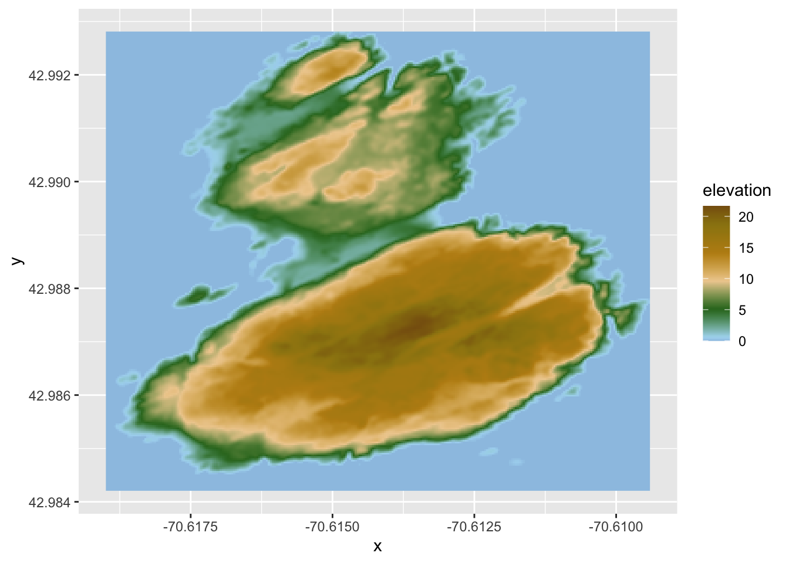</p>
</div>
</div>
</section>
<section id="set-crs-to-fix-axis-proportions-add-other-edits" class="level4">
<h4 class="anchored" data-anchor-id="set-crs-to-fix-axis-proportions-add-other-edits">Set CRS to fix axis proportions; add other edits</h4>
<div class="cell">
<div class="sourceCode cell-code" id="cb28"><pre class="sourceCode r code-with-copy"><code class="sourceCode r"><span id="cb28-1"><a href="#cb28-1" aria-hidden="true" tabindex="-1"></a>elevmap <span class="ot">&lt;-</span> elevmap <span class="sc">+</span></span>
<span id="cb28-2"><a href="#cb28-2" aria-hidden="true" tabindex="-1"></a>  <span class="fu">coord_sf</span>(<span class="at">crs =</span> <span class="dv">4326</span>, <span class="at">expand =</span> <span class="cn">FALSE</span>) <span class="sc">+</span></span>
<span id="cb28-3"><a href="#cb28-3" aria-hidden="true" tabindex="-1"></a>  <span class="fu">theme</span>(<span class="at">axis.title =</span> <span class="fu">element_blank</span>(),</span>
<span id="cb28-4"><a href="#cb28-4" aria-hidden="true" tabindex="-1"></a>        <span class="at">legend.position =</span> <span class="st">"none"</span>)</span>
<span id="cb28-5"><a href="#cb28-5" aria-hidden="true" tabindex="-1"></a></span>
<span id="cb28-6"><a href="#cb28-6" aria-hidden="true" tabindex="-1"></a>elevmap</span></code><button title="Copy to Clipboard" class="code-copy-button"><i class="bi"></i></button></pre></div>
<div class="cell-output-display">
<p>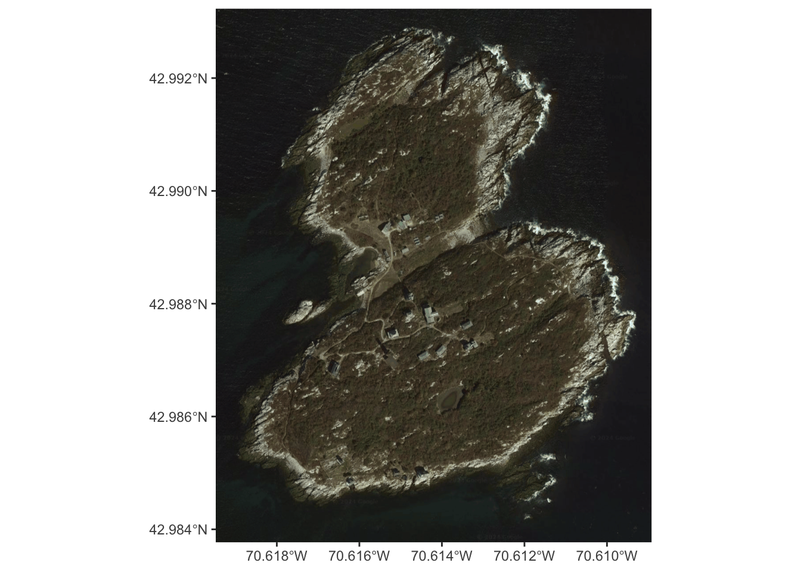</p>
</div>
</div>
</section>
</section>
</section>
<section id="import-and-plot-point-data" class="level2">
<h2 class="anchored" data-anchor-id="import-and-plot-point-data">3) Import and plot point data</h2>
<section id="import-nest-data" class="level4">
<h4 class="anchored" data-anchor-id="import-nest-data">Import nest data</h4>
<div class="cell">
<div class="sourceCode cell-code" id="cb29"><pre class="sourceCode r code-with-copy"><code class="sourceCode r"><span id="cb29-1"><a href="#cb29-1" aria-hidden="true" tabindex="-1"></a>nests <span class="ot">&lt;-</span> <span class="fu">read.csv</span>(<span class="st">"~/Desktop/Repos/wos2023-r-geospatial/workshop-files/2022_GBBGnests.csv"</span>)</span></code><button title="Copy to Clipboard" class="code-copy-button"><i class="bi"></i></button></pre></div>
</div>
</section>
<section id="optional-create-a-simple-features-object-from-nest-data" class="level4">
<h4 class="anchored" data-anchor-id="optional-create-a-simple-features-object-from-nest-data">Optional: create a simple features object from nest data</h4>
<div class="cell">
<div class="sourceCode cell-code" id="cb30"><pre class="sourceCode r code-with-copy"><code class="sourceCode r"><span id="cb30-1"><a href="#cb30-1" aria-hidden="true" tabindex="-1"></a>nests_sf <span class="ot">&lt;-</span> <span class="fu">st_as_sf</span>(nests,</span>
<span id="cb30-2"><a href="#cb30-2" aria-hidden="true" tabindex="-1"></a>                     <span class="at">coords =</span> <span class="fu">c</span>(<span class="st">"Long"</span>, <span class="st">"Lat"</span>),</span>
<span id="cb30-3"><a href="#cb30-3" aria-hidden="true" tabindex="-1"></a>                     <span class="at">crs =</span> <span class="dv">4326</span>)</span></code><button title="Copy to Clipboard" class="code-copy-button"><i class="bi"></i></button></pre></div>
</div>
</section>
<section id="plot-points-on-a-satellite-map" class="level4">
<h4 class="anchored" data-anchor-id="plot-points-on-a-satellite-map">Plot points on a satellite map</h4>
<div class="cell">
<div class="sourceCode cell-code" id="cb31"><pre class="sourceCode r code-with-copy"><code class="sourceCode r"><span id="cb31-1"><a href="#cb31-1" aria-hidden="true" tabindex="-1"></a>satmap <span class="sc">+</span></span>
<span id="cb31-2"><a href="#cb31-2" aria-hidden="true" tabindex="-1"></a>  <span class="fu">geom_point</span>(<span class="at">data =</span> nests, <span class="fu">aes</span>(<span class="at">x =</span> Long, <span class="at">y =</span> Lat))</span></code><button title="Copy to Clipboard" class="code-copy-button"><i class="bi"></i></button></pre></div>
<div class="cell-output cell-output-stderr">
<pre><code>Warning: Removed 1 rows containing missing values (`geom_rect()`).</code></pre>
</div>
<div class="cell-output-display">
<p>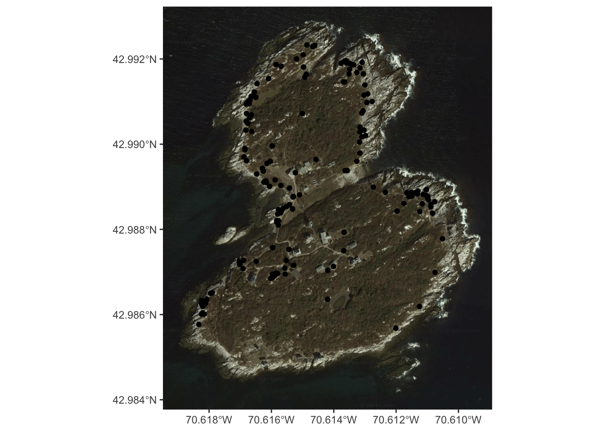</p>
</div>
<div class="sourceCode cell-code" id="cb33"><pre class="sourceCode r code-with-copy"><code class="sourceCode r"><span id="cb33-1"><a href="#cb33-1" aria-hidden="true" tabindex="-1"></a>  <span class="co"># use the line below if you are adding points with simple features geometry</span></span>
<span id="cb33-2"><a href="#cb33-2" aria-hidden="true" tabindex="-1"></a>  <span class="co">#geom_sf(data = nests_sf, inherit.aes = FALSE)</span></span></code><button title="Copy to Clipboard" class="code-copy-button"><i class="bi"></i></button></pre></div>
</div>
</section>
<section id="change-point-colour-and-style" class="level4">
<h4 class="anchored" data-anchor-id="change-point-colour-and-style">Change point colour and style</h4>
<div class="cell">
<div class="sourceCode cell-code" id="cb34"><pre class="sourceCode r code-with-copy"><code class="sourceCode r"><span id="cb34-1"><a href="#cb34-1" aria-hidden="true" tabindex="-1"></a>satmap <span class="ot">&lt;-</span> satmap <span class="sc">+</span></span>
<span id="cb34-2"><a href="#cb34-2" aria-hidden="true" tabindex="-1"></a>  <span class="fu">geom_point</span>(<span class="at">data =</span> nests, <span class="fu">aes</span>(<span class="at">x =</span> Long, <span class="at">y =</span> Lat), <span class="at">shape =</span> <span class="dv">21</span>, <span class="at">fill =</span> <span class="st">"white"</span>, <span class="at">size =</span> <span class="fl">2.5</span>)</span>
<span id="cb34-3"><a href="#cb34-3" aria-hidden="true" tabindex="-1"></a>  <span class="co">#geom_sf(data = nests_sf, inherit.aes = FALSE)</span></span>
<span id="cb34-4"><a href="#cb34-4" aria-hidden="true" tabindex="-1"></a></span>
<span id="cb34-5"><a href="#cb34-5" aria-hidden="true" tabindex="-1"></a>satmap</span></code><button title="Copy to Clipboard" class="code-copy-button"><i class="bi"></i></button></pre></div>
<div class="cell-output cell-output-stderr">
<pre><code>Warning: Removed 1 rows containing missing values (`geom_rect()`).</code></pre>
</div>
<div class="cell-output-display">
<p>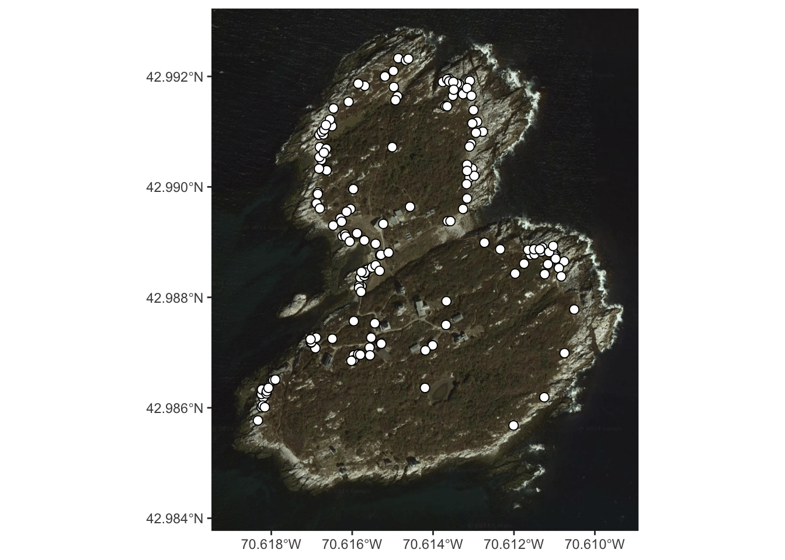</p>
</div>
</div>
</section>
<section id="zoom-into-a-subsection-of-the-map" class="level4">
<h4 class="anchored" data-anchor-id="zoom-into-a-subsection-of-the-map">Zoom into a subsection of the map</h4>
<div class="cell">
<div class="sourceCode cell-code" id="cb36"><pre class="sourceCode r code-with-copy"><code class="sourceCode r"><span id="cb36-1"><a href="#cb36-1" aria-hidden="true" tabindex="-1"></a>satmap <span class="sc">+</span></span>
<span id="cb36-2"><a href="#cb36-2" aria-hidden="true" tabindex="-1"></a>  <span class="fu">coord_sf</span>(<span class="at">xlim =</span> <span class="fu">c</span>(<span class="sc">-</span><span class="fl">70.617</span>, <span class="sc">-</span><span class="fl">70.6105</span>), <span class="at">ylim =</span> <span class="fu">c</span>(<span class="fl">42.988</span>, <span class="fl">42.990</span>), <span class="at">crs =</span> <span class="dv">4326</span>)</span></code><button title="Copy to Clipboard" class="code-copy-button"><i class="bi"></i></button></pre></div>
<div class="cell-output cell-output-stderr">
<pre><code>Coordinate system already present. Adding new coordinate system, which will
replace the existing one.</code></pre>
</div>
<div class="cell-output cell-output-stderr">
<pre><code>Warning: Removed 1 rows containing missing values (`geom_rect()`).</code></pre>
</div>
<div class="cell-output-display">
<p>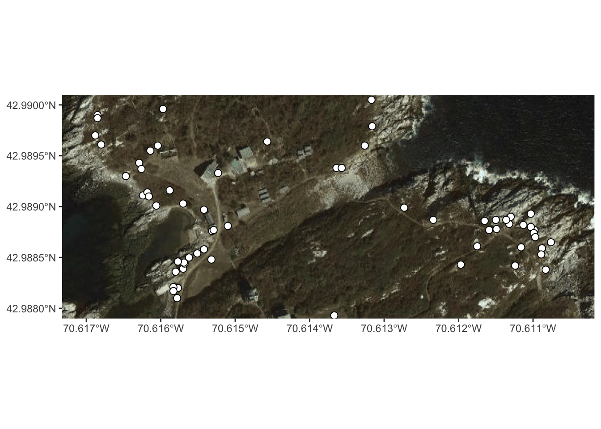</p>
</div>
</div>
</section>
<section id="vary-point-colour-with-another-variable" class="level4">
<h4 class="anchored" data-anchor-id="vary-point-colour-with-another-variable">Vary point colour with another variable</h4>
<div class="cell">
<div class="sourceCode cell-code" id="cb39"><pre class="sourceCode r code-with-copy"><code class="sourceCode r"><span id="cb39-1"><a href="#cb39-1" aria-hidden="true" tabindex="-1"></a>satmap <span class="sc">+</span></span>
<span id="cb39-2"><a href="#cb39-2" aria-hidden="true" tabindex="-1"></a>  <span class="fu">geom_point</span>(<span class="at">data =</span> nests, <span class="fu">aes</span>(<span class="at">x =</span> Long, <span class="at">y =</span> Lat, <span class="at">fill =</span> <span class="fu">factor</span>(Eggs)), <span class="at">shape =</span> <span class="dv">21</span>, <span class="at">size =</span> <span class="fl">2.5</span>) <span class="sc">+</span></span>
<span id="cb39-3"><a href="#cb39-3" aria-hidden="true" tabindex="-1"></a>  <span class="fu">scale_fill_manual</span>(<span class="at">values =</span> <span class="fu">c</span>(<span class="st">"dodgerblue"</span>, <span class="st">"goldenrod1"</span>, <span class="st">"white"</span>), <span class="at">name =</span> <span class="st">"Number</span><span class="sc">\n</span><span class="st">of Eggs"</span>) <span class="sc">+</span></span>
<span id="cb39-4"><a href="#cb39-4" aria-hidden="true" tabindex="-1"></a>  <span class="fu">theme</span>(<span class="at">legend.title =</span> <span class="fu">element_text</span>(<span class="at">face =</span> <span class="st">"bold"</span>))</span></code><button title="Copy to Clipboard" class="code-copy-button"><i class="bi"></i></button></pre></div>
<div class="cell-output cell-output-stderr">
<pre><code>Warning: Removed 1 rows containing missing values (`geom_rect()`).</code></pre>
</div>
<div class="cell-output-display">
<p>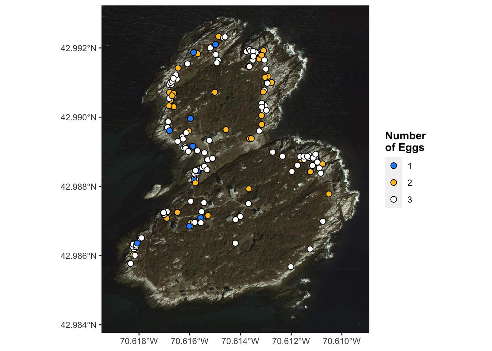</p>
</div>
</div>
</section>
<section id="plot-points-on-a-topographic-map" class="level4">
<h4 class="anchored" data-anchor-id="plot-points-on-a-topographic-map">Plot points on a topographic map</h4>
<div class="cell">
<div class="sourceCode cell-code" id="cb41"><pre class="sourceCode r code-with-copy"><code class="sourceCode r"><span id="cb41-1"><a href="#cb41-1" aria-hidden="true" tabindex="-1"></a>elevmap <span class="sc">+</span></span>
<span id="cb41-2"><a href="#cb41-2" aria-hidden="true" tabindex="-1"></a>  <span class="fu">geom_point</span>(<span class="at">data =</span> nests, <span class="fu">aes</span>(<span class="at">x =</span> Long, <span class="at">y =</span> Lat), <span class="at">shape =</span> <span class="dv">21</span>, <span class="at">fill =</span> <span class="st">"white"</span>, <span class="at">size =</span> <span class="fl">2.5</span>)</span></code><button title="Copy to Clipboard" class="code-copy-button"><i class="bi"></i></button></pre></div>
<div class="cell-output-display">
<p>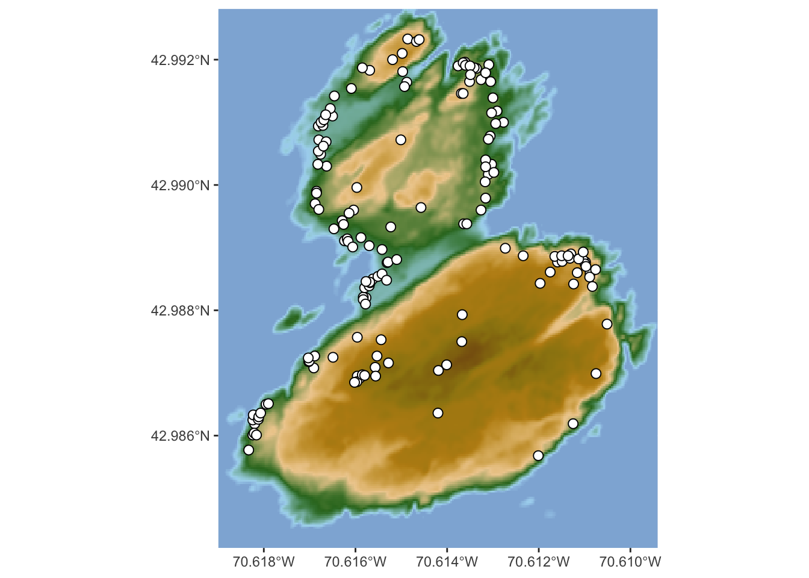</p>
</div>
</div>
</section>
</section>
<section id="other-possibilities" class="level2">
<h2 class="anchored" data-anchor-id="other-possibilities">4) Other possibilities</h2>
<p>For these final examples, we will use a dataset of fishing sites on Georges Bank in the north Atlantic.</p>
<section id="first-create-the-basemap-well-use" class="level4">
<h4 class="anchored" data-anchor-id="first-create-the-basemap-well-use">First, create the basemap we’ll use</h4>
<div class="cell">
<div class="sourceCode cell-code" id="cb42"><pre class="sourceCode r code-with-copy"><code class="sourceCode r"><span id="cb42-1"><a href="#cb42-1" aria-hidden="true" tabindex="-1"></a><span class="co"># import bathymetric data from NOAA's ETOPO 2022 database</span></span>
<span id="cb42-2"><a href="#cb42-2" aria-hidden="true" tabindex="-1"></a>GB_bathy <span class="ot">&lt;-</span> <span class="fu">getNOAA.bathy</span>(<span class="at">lon1 =</span> <span class="sc">-</span><span class="dv">74</span>,</span>
<span id="cb42-3"><a href="#cb42-3" aria-hidden="true" tabindex="-1"></a>                          <span class="at">lon2 =</span> <span class="sc">-</span><span class="dv">62</span>,</span>
<span id="cb42-4"><a href="#cb42-4" aria-hidden="true" tabindex="-1"></a>                          <span class="at">lat1 =</span> <span class="dv">37</span>,</span>
<span id="cb42-5"><a href="#cb42-5" aria-hidden="true" tabindex="-1"></a>                          <span class="at">lat2 =</span> <span class="dv">46</span>,</span>
<span id="cb42-6"><a href="#cb42-6" aria-hidden="true" tabindex="-1"></a>                          <span class="at">resolution =</span> <span class="dv">1</span>)</span></code><button title="Copy to Clipboard" class="code-copy-button"><i class="bi"></i></button></pre></div>
<div class="cell-output cell-output-stderr">
<pre><code>Querying NOAA database ...</code></pre>
</div>
<div class="cell-output cell-output-stderr">
<pre><code>This may take seconds to minutes, depending on grid size</code></pre>
</div>
<div class="cell-output cell-output-stderr">
<pre><code>Building bathy matrix ...</code></pre>
</div>
<div class="sourceCode cell-code" id="cb46"><pre class="sourceCode r code-with-copy"><code class="sourceCode r"><span id="cb46-1"><a href="#cb46-1" aria-hidden="true" tabindex="-1"></a><span class="co"># prepare bathy data for mapping with ggplot</span></span>
<span id="cb46-2"><a href="#cb46-2" aria-hidden="true" tabindex="-1"></a>ggbathy <span class="ot">&lt;-</span> GB_bathy <span class="sc">%&gt;%</span></span>
<span id="cb46-3"><a href="#cb46-3" aria-hidden="true" tabindex="-1"></a>  <span class="fu">fortify</span>() <span class="sc">%&gt;%</span></span>
<span id="cb46-4"><a href="#cb46-4" aria-hidden="true" tabindex="-1"></a>  <span class="co"># create custom depth contours</span></span>
<span id="cb46-5"><a href="#cb46-5" aria-hidden="true" tabindex="-1"></a>  <span class="fu">mutate</span>(<span class="at">depth_bins =</span> <span class="fu">cut</span>(z,</span>
<span id="cb46-6"><a href="#cb46-6" aria-hidden="true" tabindex="-1"></a>                          <span class="at">breaks =</span> <span class="fu">c</span>(<span class="dv">0</span>, <span class="sc">-</span><span class="dv">30</span>, <span class="sc">-</span><span class="dv">55</span>, <span class="sc">-</span><span class="dv">75</span>, <span class="sc">-</span><span class="dv">90</span>, <span class="sc">-</span><span class="dv">120</span>, <span class="sc">-</span><span class="dv">150</span>, <span class="sc">-</span><span class="dv">180</span>,</span>
<span id="cb46-7"><a href="#cb46-7" aria-hidden="true" tabindex="-1"></a>                                     <span class="sc">-</span><span class="dv">780</span>, <span class="sc">-</span><span class="dv">1380</span>, <span class="sc">-</span><span class="dv">1980</span>, <span class="sc">-</span><span class="dv">2580</span>, <span class="sc">-</span><span class="dv">3180</span>, <span class="sc">-</span><span class="cn">Inf</span>)))</span>
<span id="cb46-8"><a href="#cb46-8" aria-hidden="true" tabindex="-1"></a></span>
<span id="cb46-9"><a href="#cb46-9" aria-hidden="true" tabindex="-1"></a>Georges <span class="ot">&lt;-</span> <span class="fu">ggplot</span>() <span class="sc">+</span></span>
<span id="cb46-10"><a href="#cb46-10" aria-hidden="true" tabindex="-1"></a>  <span class="fu">geom_raster</span>(<span class="at">data =</span> ggbathy,</span>
<span id="cb46-11"><a href="#cb46-11" aria-hidden="true" tabindex="-1"></a>              <span class="fu">aes</span>(x, y, <span class="at">fill =</span> depth_bins),</span>
<span id="cb46-12"><a href="#cb46-12" aria-hidden="true" tabindex="-1"></a>              <span class="at">interpolate =</span> <span class="cn">TRUE</span>,</span>
<span id="cb46-13"><a href="#cb46-13" aria-hidden="true" tabindex="-1"></a>              <span class="at">alpha =</span> <span class="fl">0.75</span>) <span class="sc">+</span></span>
<span id="cb46-14"><a href="#cb46-14" aria-hidden="true" tabindex="-1"></a>  <span class="fu">coord_sf</span>(<span class="at">xlim =</span> <span class="fu">c</span>(<span class="sc">-</span><span class="fl">70.5</span>, <span class="sc">-</span><span class="dv">66</span>), <span class="at">ylim =</span> <span class="fu">c</span>(<span class="dv">40</span>, <span class="fl">42.5</span>), <span class="at">crs =</span> <span class="fu">st_crs</span>(<span class="dv">4326</span>)) <span class="sc">+</span></span>
<span id="cb46-15"><a href="#cb46-15" aria-hidden="true" tabindex="-1"></a>  <span class="fu">theme</span>(<span class="at">axis.title =</span> <span class="fu">element_blank</span>(),</span>
<span id="cb46-16"><a href="#cb46-16" aria-hidden="true" tabindex="-1"></a>        <span class="at">legend.position =</span> <span class="st">"none"</span>)</span>
<span id="cb46-17"><a href="#cb46-17" aria-hidden="true" tabindex="-1"></a></span>
<span id="cb46-18"><a href="#cb46-18" aria-hidden="true" tabindex="-1"></a>Georges</span></code><button title="Copy to Clipboard" class="code-copy-button"><i class="bi"></i></button></pre></div>
<div class="cell-output-display">
<p>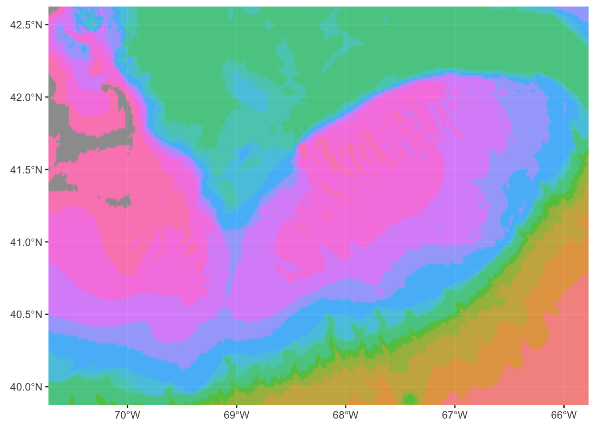</p>
</div>
<div class="sourceCode cell-code" id="cb47"><pre class="sourceCode r code-with-copy"><code class="sourceCode r"><span id="cb47-1"><a href="#cb47-1" aria-hidden="true" tabindex="-1"></a><span class="co"># change default colour scale to shades of blue</span></span>
<span id="cb47-2"><a href="#cb47-2" aria-hidden="true" tabindex="-1"></a>Georges <span class="ot">&lt;-</span> Georges <span class="sc">+</span></span>
<span id="cb47-3"><a href="#cb47-3" aria-hidden="true" tabindex="-1"></a>  <span class="fu">scale_fill_manual</span>(<span class="at">values =</span> <span class="fu">c</span>(<span class="st">"#08306B"</span>, <span class="st">"#084184"</span>, <span class="st">"#08519C"</span>, <span class="st">"#1561A9"</span>,</span>
<span id="cb47-4"><a href="#cb47-4" aria-hidden="true" tabindex="-1"></a>                               <span class="st">"#2171B5"</span>, <span class="st">"#3282BE"</span>, <span class="st">"#4292C6"</span>, <span class="st">"#57A0CE"</span>,</span>
<span id="cb47-5"><a href="#cb47-5" aria-hidden="true" tabindex="-1"></a>                               <span class="st">"#6BAED6"</span>, <span class="st">"#85BCDC"</span>, <span class="st">"#9ECAE1"</span>, <span class="st">"#B2D3E8"</span>,</span>
<span id="cb47-6"><a href="#cb47-6" aria-hidden="true" tabindex="-1"></a>                               <span class="st">"#C6DBEF"</span>))</span>
<span id="cb47-7"><a href="#cb47-7" aria-hidden="true" tabindex="-1"></a></span>
<span id="cb47-8"><a href="#cb47-8" aria-hidden="true" tabindex="-1"></a>Georges</span></code><button title="Copy to Clipboard" class="code-copy-button"><i class="bi"></i></button></pre></div>
<div class="cell-output-display">
<p>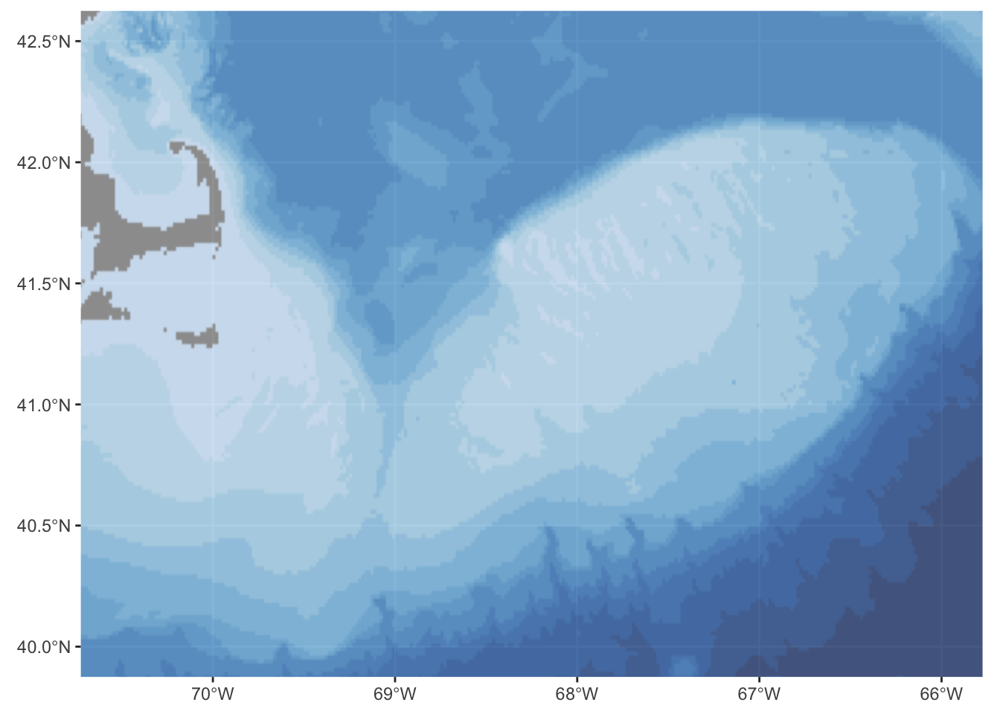</p>
</div>
</div>
</section>
<section id="a-add-high-resolution-coastline" class="level3">
<h3 class="anchored" data-anchor-id="a-add-high-resolution-coastline">a) Add high-resolution coastline</h3>
<p>GSHHG (Global Self-consistent, Hierarchical, High-resolution Geography) shoreline data can be downloaded from <a href="https://www.ngdc.noaa.gov/mgg/shorelines/data/gshhg/latest" class="uri">https://www.ngdc.noaa.gov/mgg/shorelines/data/gshhg/latest</a>.</p>
<p>Spherical geometry is turned off because many polygons cannot be valid on S2 and R2 simultaneously, as outlined in <a href="https://r-spatial.org/book/04-Spherical.html#validity-on-the-sphere" class="uri">https://r-spatial.org/book/04-Spherical.html#validity-on-the-sphere</a>. (This is an excellent book for general referencing!)</p>
<p>The <code>st_make_valid()</code> function serves to resolve any areas of geometry that are not topologically valid and thus would raise a GEOS error. Another useful function not needed here, <code>st_remove_holes()</code> (from the package <code>nngeo</code>), similarly resolves issues such as false slivers of space between contiguous polygons.</p>
<div class="cell">
<div class="sourceCode cell-code" id="cb48"><pre class="sourceCode r code-with-copy"><code class="sourceCode r"><span id="cb48-1"><a href="#cb48-1" aria-hidden="true" tabindex="-1"></a><span class="co"># turn off spherical geometry to avoid "duplicate vertex" errors</span></span>
<span id="cb48-2"><a href="#cb48-2" aria-hidden="true" tabindex="-1"></a><span class="fu">sf_use_s2</span>(<span class="cn">FALSE</span>)</span></code><button title="Copy to Clipboard" class="code-copy-button"><i class="bi"></i></button></pre></div>
<div class="cell-output cell-output-stderr">
<pre><code>Spherical geometry (s2) switched off</code></pre>
</div>
<div class="sourceCode cell-code" id="cb50"><pre class="sourceCode r code-with-copy"><code class="sourceCode r"><span id="cb50-1"><a href="#cb50-1" aria-hidden="true" tabindex="-1"></a><span class="co"># read shapefile from wherever the file is located</span></span>
<span id="cb50-2"><a href="#cb50-2" aria-hidden="true" tabindex="-1"></a>mass <span class="ot">&lt;-</span> <span class="fu">read_sf</span>(<span class="st">"/Library/Frameworks/R.framework/Versions/4.2-arm64/Resources/library/gshhg-shp-2.3.7/GSHHS_shp/f/GSHHS_f_L1.shp"</span>) <span class="sc">%&gt;%</span></span>
<span id="cb50-3"><a href="#cb50-3" aria-hidden="true" tabindex="-1"></a>  <span class="fu">st_make_valid</span>() <span class="sc">%&gt;%</span></span>
<span id="cb50-4"><a href="#cb50-4" aria-hidden="true" tabindex="-1"></a>  <span class="fu">st_crop</span>(<span class="at">xmin =</span> <span class="sc">-</span><span class="dv">71</span>, <span class="at">xmax =</span> <span class="sc">-</span><span class="dv">66</span>, <span class="at">ymin =</span> <span class="dv">40</span>, <span class="at">ymax =</span> <span class="dv">43</span>)</span></code><button title="Copy to Clipboard" class="code-copy-button"><i class="bi"></i></button></pre></div>
<div class="cell-output cell-output-stderr">
<pre><code>although coordinates are longitude/latitude, st_intersection assumes that they
are planar</code></pre>
</div>
<div class="cell-output cell-output-stderr">
<pre><code>Warning: attribute variables are assumed to be spatially constant throughout
all geometries</code></pre>
</div>
<div class="sourceCode cell-code" id="cb53"><pre class="sourceCode r code-with-copy"><code class="sourceCode r"><span id="cb53-1"><a href="#cb53-1" aria-hidden="true" tabindex="-1"></a><span class="co"># add to map</span></span>
<span id="cb53-2"><a href="#cb53-2" aria-hidden="true" tabindex="-1"></a>Georges <span class="ot">&lt;-</span> Georges <span class="sc">+</span></span>
<span id="cb53-3"><a href="#cb53-3" aria-hidden="true" tabindex="-1"></a>  <span class="fu">geom_sf</span>(<span class="at">data =</span> mass, <span class="at">fill =</span> <span class="st">"darkgrey"</span>, <span class="at">colour =</span> <span class="st">"black"</span>) <span class="sc">+</span></span>
<span id="cb53-4"><a href="#cb53-4" aria-hidden="true" tabindex="-1"></a>  <span class="fu">scale_fill_manual</span>(<span class="at">values =</span> <span class="fu">c</span>(<span class="st">"#08306B"</span>, <span class="st">"#084184"</span>, <span class="st">"#08519C"</span>, <span class="st">"#1561A9"</span>,</span>
<span id="cb53-5"><a href="#cb53-5" aria-hidden="true" tabindex="-1"></a>                               <span class="st">"#2171B5"</span>, <span class="st">"#3282BE"</span>, <span class="st">"#4292C6"</span>, <span class="st">"#57A0CE"</span>,</span>
<span id="cb53-6"><a href="#cb53-6" aria-hidden="true" tabindex="-1"></a>                               <span class="st">"#6BAED6"</span>, <span class="st">"#85BCDC"</span>, <span class="st">"#9ECAE1"</span>, <span class="st">"#B2D3E8"</span>,</span>
<span id="cb53-7"><a href="#cb53-7" aria-hidden="true" tabindex="-1"></a>                               <span class="st">"#C6DBEF"</span>),</span>
<span id="cb53-8"><a href="#cb53-8" aria-hidden="true" tabindex="-1"></a>                    <span class="at">na.value =</span> <span class="st">"#C6DBEF"</span>) <span class="sc">+</span>   <span class="co"># cleans up pixelated coastline edges</span></span>
<span id="cb53-9"><a href="#cb53-9" aria-hidden="true" tabindex="-1"></a>  <span class="fu">coord_sf</span>(<span class="at">xlim =</span> <span class="fu">c</span>(<span class="sc">-</span><span class="fl">70.5</span>, <span class="sc">-</span><span class="dv">66</span>), <span class="at">ylim =</span> <span class="fu">c</span>(<span class="dv">40</span>, <span class="fl">42.5</span>)) <span class="sc">+</span></span>
<span id="cb53-10"><a href="#cb53-10" aria-hidden="true" tabindex="-1"></a>  <span class="fu">scale_y_continuous</span>(<span class="at">breaks =</span> <span class="fu">c</span>(<span class="dv">40</span>, <span class="dv">41</span>, <span class="dv">42</span>))</span></code><button title="Copy to Clipboard" class="code-copy-button"><i class="bi"></i></button></pre></div>
<div class="cell-output cell-output-stderr">
<pre><code>Coordinate system already present. Adding new coordinate system, which will
replace the existing one.</code></pre>
</div>
<div class="cell-output cell-output-stderr">
<pre><code>Scale for fill is already present.
Adding another scale for fill, which will replace the existing scale.</code></pre>
</div>
<div class="sourceCode cell-code" id="cb56"><pre class="sourceCode r code-with-copy"><code class="sourceCode r"><span id="cb56-1"><a href="#cb56-1" aria-hidden="true" tabindex="-1"></a>Georges</span></code><button title="Copy to Clipboard" class="code-copy-button"><i class="bi"></i></button></pre></div>
<div class="cell-output-display">
<p>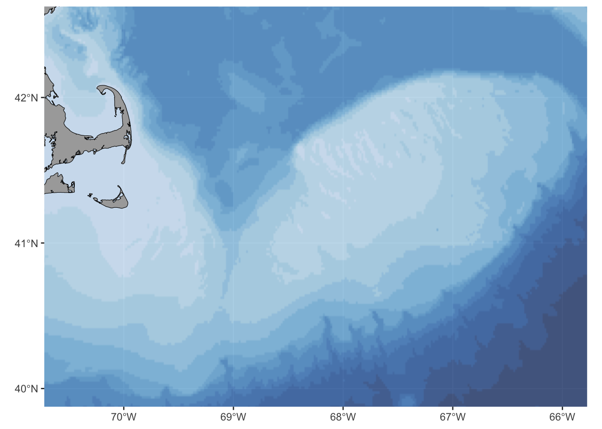</p>
</div>
</div>
</section>
<section id="b-import-and-plot-spatial-polygons" class="level3">
<h3 class="anchored" data-anchor-id="b-import-and-plot-spatial-polygons">b) Import and plot spatial polygons</h3>
<section id="import-scallop-fishing-zone-data" class="level4">
<h4 class="anchored" data-anchor-id="import-scallop-fishing-zone-data">Import scallop fishing zone data</h4>
<div class="cell">
<div class="sourceCode cell-code" id="cb57"><pre class="sourceCode r code-with-copy"><code class="sourceCode r"><span id="cb57-1"><a href="#cb57-1" aria-hidden="true" tabindex="-1"></a>GB <span class="ot">&lt;-</span> <span class="fu">read_sf</span>(<span class="st">"~/Desktop/Repos/wos2023-r-geospatial/workshop-files/2020SAMZones/GB_Estimation_Areas_2019_UTM19_PDT_SFModified.shp"</span>)</span>
<span id="cb57-2"><a href="#cb57-2" aria-hidden="true" tabindex="-1"></a></span>
<span id="cb57-3"><a href="#cb57-3" aria-hidden="true" tabindex="-1"></a><span class="co"># subset open fishing areas</span></span>
<span id="cb57-4"><a href="#cb57-4" aria-hidden="true" tabindex="-1"></a>GSC <span class="ot">&lt;-</span> <span class="fu">subset</span>(GB, NewSAMS <span class="sc">==</span> <span class="st">"GSC"</span>)</span>
<span id="cb57-5"><a href="#cb57-5" aria-hidden="true" tabindex="-1"></a>NF <span class="ot">&lt;-</span> <span class="fu">subset</span>(GB, NewSAMS <span class="sc">==</span> <span class="st">"NF"</span>)</span>
<span id="cb57-6"><a href="#cb57-6" aria-hidden="true" tabindex="-1"></a>CL2_AccessSoutheast <span class="ot">&lt;-</span> <span class="fu">subset</span>(GB, NewSAMS <span class="sc">==</span> <span class="st">"CL2-Access-Southeast"</span>)</span>
<span id="cb57-7"><a href="#cb57-7" aria-hidden="true" tabindex="-1"></a>NLS_West <span class="ot">&lt;-</span> <span class="fu">subset</span>(GB, NewSAMS <span class="sc">==</span> <span class="st">"NLS-West"</span>)</span></code><button title="Copy to Clipboard" class="code-copy-button"><i class="bi"></i></button></pre></div>
</div>
<p>Note that the innate CRS of this polygon collection is NAD83 / UTM zone 19N (which is EPSG:26919), <em>not</em> WGS 84; therefore it is important that we set the CRS to EPSG:4326 in <code>coord_sf()</code> in order to align with our existing basemap.</p>
</section>
<section id="plot-polygons" class="level4">
<h4 class="anchored" data-anchor-id="plot-polygons">Plot polygons</h4>
<div class="cell">
<div class="sourceCode cell-code" id="cb58"><pre class="sourceCode r code-with-copy"><code class="sourceCode r"><span id="cb58-1"><a href="#cb58-1" aria-hidden="true" tabindex="-1"></a>Georges <span class="sc">+</span></span>
<span id="cb58-2"><a href="#cb58-2" aria-hidden="true" tabindex="-1"></a>  <span class="fu">geom_sf</span>(<span class="at">data =</span> GSC, <span class="at">fill =</span> <span class="cn">NA</span>, <span class="at">colour =</span> <span class="st">"black"</span>,</span>
<span id="cb58-3"><a href="#cb58-3" aria-hidden="true" tabindex="-1"></a>          <span class="at">linewidth =</span> <span class="fl">0.4</span>, <span class="at">linetype =</span> <span class="st">"dashed"</span>) <span class="sc">+</span></span>
<span id="cb58-4"><a href="#cb58-4" aria-hidden="true" tabindex="-1"></a>  <span class="fu">geom_sf</span>(<span class="at">data =</span> NF, <span class="at">fill =</span> <span class="cn">NA</span>, <span class="at">colour =</span> <span class="st">"black"</span>,</span>
<span id="cb58-5"><a href="#cb58-5" aria-hidden="true" tabindex="-1"></a>          <span class="at">linewidth =</span> <span class="fl">0.4</span>, <span class="at">linetype =</span> <span class="st">"dashed"</span>) <span class="sc">+</span></span>
<span id="cb58-6"><a href="#cb58-6" aria-hidden="true" tabindex="-1"></a>  <span class="fu">geom_sf</span>(<span class="at">data =</span> CL2_AccessSoutheast, <span class="at">fill =</span> <span class="cn">NA</span>, <span class="at">colour =</span> <span class="st">"black"</span>,</span>
<span id="cb58-7"><a href="#cb58-7" aria-hidden="true" tabindex="-1"></a>          <span class="at">linewidth =</span> <span class="fl">0.4</span>, <span class="at">linetype =</span> <span class="st">"dashed"</span>) <span class="sc">+</span></span>
<span id="cb58-8"><a href="#cb58-8" aria-hidden="true" tabindex="-1"></a>  <span class="fu">geom_sf</span>(<span class="at">data =</span> NLS_West, <span class="at">fill =</span> <span class="cn">NA</span>, <span class="at">colour =</span> <span class="st">"black"</span>,</span>
<span id="cb58-9"><a href="#cb58-9" aria-hidden="true" tabindex="-1"></a>          <span class="at">linewidth =</span> <span class="fl">0.4</span>, <span class="at">linetype =</span> <span class="st">"dashed"</span>) <span class="sc">+</span></span>
<span id="cb58-10"><a href="#cb58-10" aria-hidden="true" tabindex="-1"></a>  <span class="fu">coord_sf</span>(<span class="at">xlim =</span> <span class="fu">c</span>(<span class="sc">-</span><span class="fl">70.5</span>, <span class="sc">-</span><span class="dv">66</span>), <span class="at">ylim =</span> <span class="fu">c</span>(<span class="dv">40</span>, <span class="fl">42.5</span>), <span class="at">crs =</span> <span class="fu">st_crs</span>(<span class="dv">4326</span>))</span></code><button title="Copy to Clipboard" class="code-copy-button"><i class="bi"></i></button></pre></div>
<div class="cell-output cell-output-stderr">
<pre><code>Coordinate system already present. Adding new coordinate system, which will
replace the existing one.</code></pre>
</div>
<div class="cell-output-display">
<p>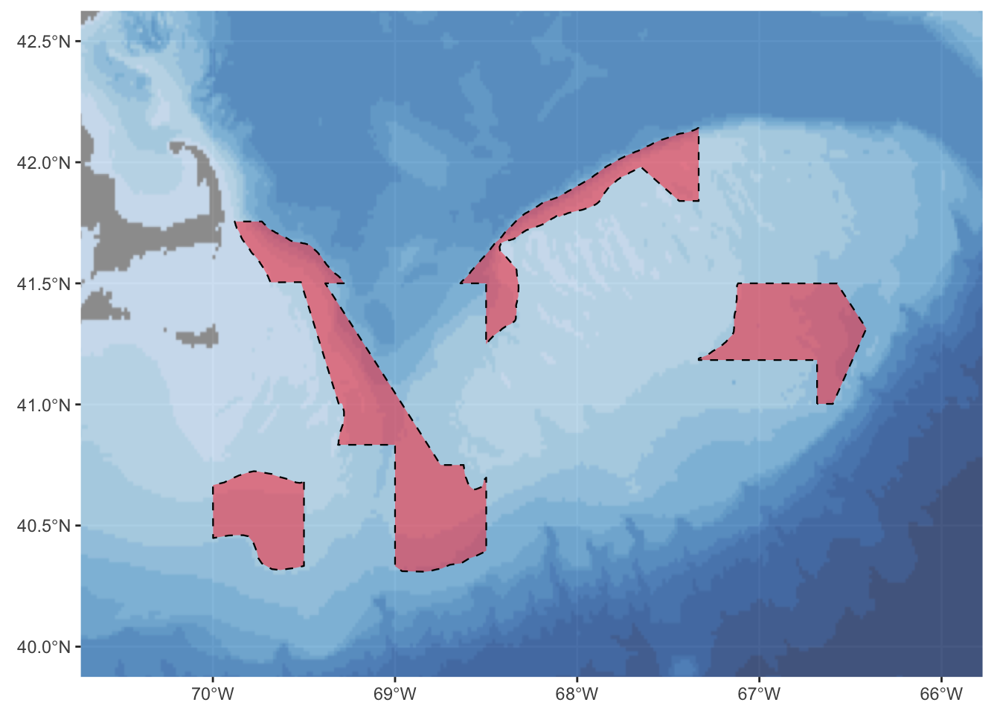</p>
</div>
</div>
</section>
<section id="colour-polygons" class="level4">
<h4 class="anchored" data-anchor-id="colour-polygons">Colour polygons</h4>
<div class="cell">
<div class="sourceCode cell-code" id="cb60"><pre class="sourceCode r code-with-copy"><code class="sourceCode r"><span id="cb60-1"><a href="#cb60-1" aria-hidden="true" tabindex="-1"></a>Georges <span class="ot">&lt;-</span> Georges <span class="sc">+</span></span>
<span id="cb60-2"><a href="#cb60-2" aria-hidden="true" tabindex="-1"></a>  <span class="fu">geom_sf</span>(<span class="at">data =</span> GSC, <span class="at">fill =</span> <span class="st">"firebrick1"</span>, <span class="at">alpha =</span> <span class="fl">0.5</span>, <span class="at">colour =</span> <span class="st">"black"</span>,</span>
<span id="cb60-3"><a href="#cb60-3" aria-hidden="true" tabindex="-1"></a>          <span class="at">linewidth =</span> <span class="fl">0.4</span>, <span class="at">linetype =</span> <span class="st">"dashed"</span>) <span class="sc">+</span></span>
<span id="cb60-4"><a href="#cb60-4" aria-hidden="true" tabindex="-1"></a>  <span class="fu">geom_sf</span>(<span class="at">data =</span> NF, <span class="at">fill =</span> <span class="st">"firebrick1"</span>, <span class="at">alpha =</span> <span class="fl">0.5</span>, <span class="at">colour =</span> <span class="st">"black"</span>,</span>
<span id="cb60-5"><a href="#cb60-5" aria-hidden="true" tabindex="-1"></a>          <span class="at">linewidth =</span> <span class="fl">0.4</span>, <span class="at">linetype =</span> <span class="st">"dashed"</span>) <span class="sc">+</span></span>
<span id="cb60-6"><a href="#cb60-6" aria-hidden="true" tabindex="-1"></a>  <span class="fu">geom_sf</span>(<span class="at">data =</span> CL2_AccessSoutheast, <span class="at">fill =</span> <span class="st">"firebrick1"</span>, <span class="at">alpha =</span> <span class="fl">0.5</span>, <span class="at">colour =</span> <span class="st">"black"</span>,</span>
<span id="cb60-7"><a href="#cb60-7" aria-hidden="true" tabindex="-1"></a>          <span class="at">linewidth =</span> <span class="fl">0.4</span>, <span class="at">linetype =</span> <span class="st">"dashed"</span>) <span class="sc">+</span></span>
<span id="cb60-8"><a href="#cb60-8" aria-hidden="true" tabindex="-1"></a>  <span class="fu">geom_sf</span>(<span class="at">data =</span> NLS_West, <span class="at">fill =</span> <span class="st">"firebrick1"</span>, <span class="at">alpha =</span> <span class="fl">0.5</span>, <span class="at">colour =</span> <span class="st">"black"</span>,</span>
<span id="cb60-9"><a href="#cb60-9" aria-hidden="true" tabindex="-1"></a>          <span class="at">linewidth =</span> <span class="fl">0.4</span>, <span class="at">linetype =</span> <span class="st">"dashed"</span>) <span class="sc">+</span></span>
<span id="cb60-10"><a href="#cb60-10" aria-hidden="true" tabindex="-1"></a>  <span class="fu">coord_sf</span>(<span class="at">xlim =</span> <span class="fu">c</span>(<span class="sc">-</span><span class="fl">70.5</span>, <span class="sc">-</span><span class="dv">66</span>), <span class="at">ylim =</span> <span class="fu">c</span>(<span class="dv">40</span>, <span class="fl">42.5</span>), <span class="at">crs =</span> <span class="fu">st_crs</span>(<span class="dv">4326</span>))</span></code><button title="Copy to Clipboard" class="code-copy-button"><i class="bi"></i></button></pre></div>
<div class="cell-output cell-output-stderr">
<pre><code>Coordinate system already present. Adding new coordinate system, which will
replace the existing one.</code></pre>
</div>
<div class="sourceCode cell-code" id="cb62"><pre class="sourceCode r code-with-copy"><code class="sourceCode r"><span id="cb62-1"><a href="#cb62-1" aria-hidden="true" tabindex="-1"></a>Georges</span></code><button title="Copy to Clipboard" class="code-copy-button"><i class="bi"></i></button></pre></div>
<div class="cell-output-display">
<p>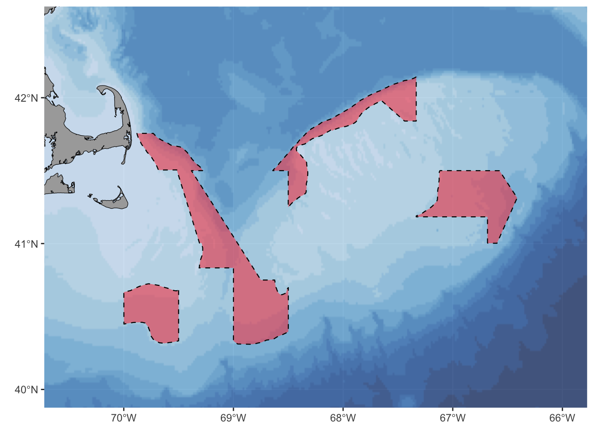</p>
</div>
</div>
</section>
<section id="import-and-plot-point-data-1" class="level4">
<h4 class="anchored" data-anchor-id="import-and-plot-point-data-1">Import and plot point data</h4>
<div class="cell">
<div class="sourceCode cell-code" id="cb63"><pre class="sourceCode r code-with-copy"><code class="sourceCode r"><span id="cb63-1"><a href="#cb63-1" aria-hidden="true" tabindex="-1"></a>fishing <span class="ot">&lt;-</span> <span class="fu">read.csv</span>(<span class="st">"~/Desktop/Repos/wos2023-r-geospatial/workshop-files/OctFishingData.csv"</span>) <span class="sc">%&gt;%</span></span>
<span id="cb63-2"><a href="#cb63-2" aria-hidden="true" tabindex="-1"></a>  <span class="fu">rename</span>(<span class="at">Lat =</span> Latitude_degrees_start,</span>
<span id="cb63-3"><a href="#cb63-3" aria-hidden="true" tabindex="-1"></a>         <span class="at">Long =</span> Longitude_degrees_start)</span>
<span id="cb63-4"><a href="#cb63-4" aria-hidden="true" tabindex="-1"></a></span>
<span id="cb63-5"><a href="#cb63-5" aria-hidden="true" tabindex="-1"></a>Georges <span class="sc">+</span></span>
<span id="cb63-6"><a href="#cb63-6" aria-hidden="true" tabindex="-1"></a>  <span class="fu">geom_point</span>(<span class="at">data =</span> fishing, <span class="fu">aes</span>(<span class="at">x =</span> Long, <span class="at">y =</span> Lat), <span class="at">shape =</span> <span class="dv">17</span>, <span class="at">size =</span> <span class="dv">2</span>)</span></code><button title="Copy to Clipboard" class="code-copy-button"><i class="bi"></i></button></pre></div>
<div class="cell-output-display">
<p>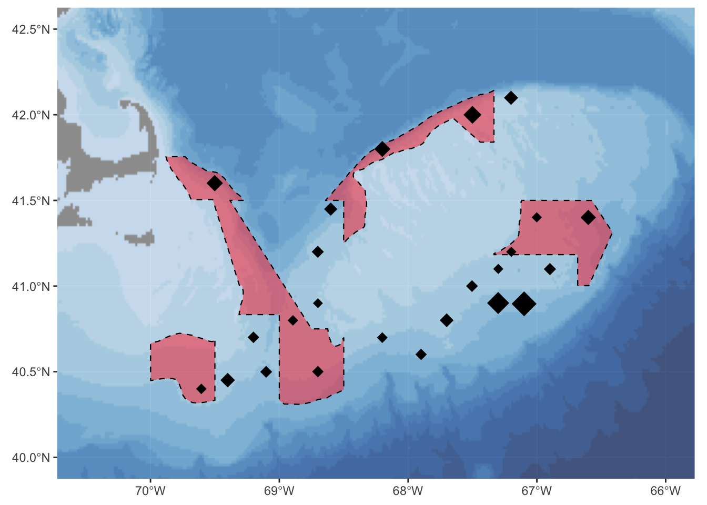</p>
</div>
</div>
</section>
</section>
<section id="c-vary-point-size-with-another-variable" class="level3">
<h3 class="anchored" data-anchor-id="c-vary-point-size-with-another-variable">c) Vary point size with another variable</h3>
<div class="cell">
<div class="sourceCode cell-code" id="cb64"><pre class="sourceCode r code-with-copy"><code class="sourceCode r"><span id="cb64-1"><a href="#cb64-1" aria-hidden="true" tabindex="-1"></a>Georges <span class="sc">+</span></span>
<span id="cb64-2"><a href="#cb64-2" aria-hidden="true" tabindex="-1"></a>  <span class="fu">geom_point</span>(<span class="at">data =</span> fishing, <span class="fu">aes</span>(<span class="at">x =</span> Long, <span class="at">y =</span> Lat, <span class="at">size =</span> Tow_abundance), <span class="at">shape =</span> <span class="dv">17</span>)</span></code><button title="Copy to Clipboard" class="code-copy-button"><i class="bi"></i></button></pre></div>
<div class="cell-output-display">
<p>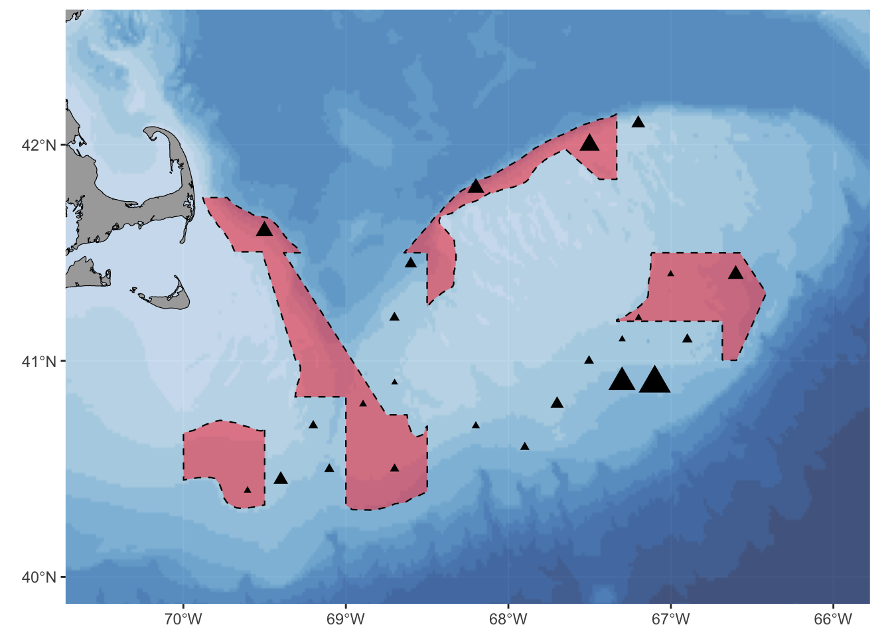</p>
</div>
</div>
</section>
<section id="d-add-labels" class="level3">
<h3 class="anchored" data-anchor-id="d-add-labels">d) Add labels</h3>
<div class="cell">
<div class="sourceCode cell-code" id="cb65"><pre class="sourceCode r code-with-copy"><code class="sourceCode r"><span id="cb65-1"><a href="#cb65-1" aria-hidden="true" tabindex="-1"></a>Georges <span class="sc">+</span></span>
<span id="cb65-2"><a href="#cb65-2" aria-hidden="true" tabindex="-1"></a>  <span class="fu">geom_label</span>(<span class="at">data =</span> fishing, <span class="fu">aes</span>(<span class="at">x =</span> Long, <span class="at">y =</span> Lat, <span class="at">label =</span> Site))</span></code><button title="Copy to Clipboard" class="code-copy-button"><i class="bi"></i></button></pre></div>
<div class="cell-output-display">
<p>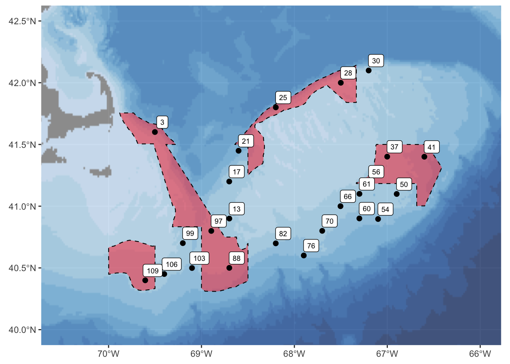</p>
</div>
</div>
</section>
<section id="e-plot-both-points-and-labels" class="level3">
<h3 class="anchored" data-anchor-id="e-plot-both-points-and-labels">e) Plot both points and labels</h3>
<div class="cell">
<div class="sourceCode cell-code" id="cb66"><pre class="sourceCode r code-with-copy"><code class="sourceCode r"><span id="cb66-1"><a href="#cb66-1" aria-hidden="true" tabindex="-1"></a>Georges <span class="sc">+</span></span>
<span id="cb66-2"><a href="#cb66-2" aria-hidden="true" tabindex="-1"></a>  <span class="fu">geom_point</span>(<span class="at">data =</span> fishing, <span class="fu">aes</span>(<span class="at">x =</span> Long, <span class="at">y =</span> Lat), <span class="at">size =</span> <span class="dv">2</span>) <span class="sc">+</span></span>
<span id="cb66-3"><a href="#cb66-3" aria-hidden="true" tabindex="-1"></a>  <span class="fu">geom_label</span>(<span class="at">data =</span> fishing, <span class="fu">aes</span>(<span class="at">x =</span> Long, <span class="at">y =</span> Lat, <span class="at">label =</span> Site),</span>
<span id="cb66-4"><a href="#cb66-4" aria-hidden="true" tabindex="-1"></a>             <span class="at">nudge_x =</span> <span class="fl">0.08</span>, <span class="at">nudge_y =</span> <span class="fl">0.08</span>, <span class="at">size =</span> <span class="fl">2.5</span>)</span></code><button title="Copy to Clipboard" class="code-copy-button"><i class="bi"></i></button></pre></div>
<div class="cell-output-display">
<p>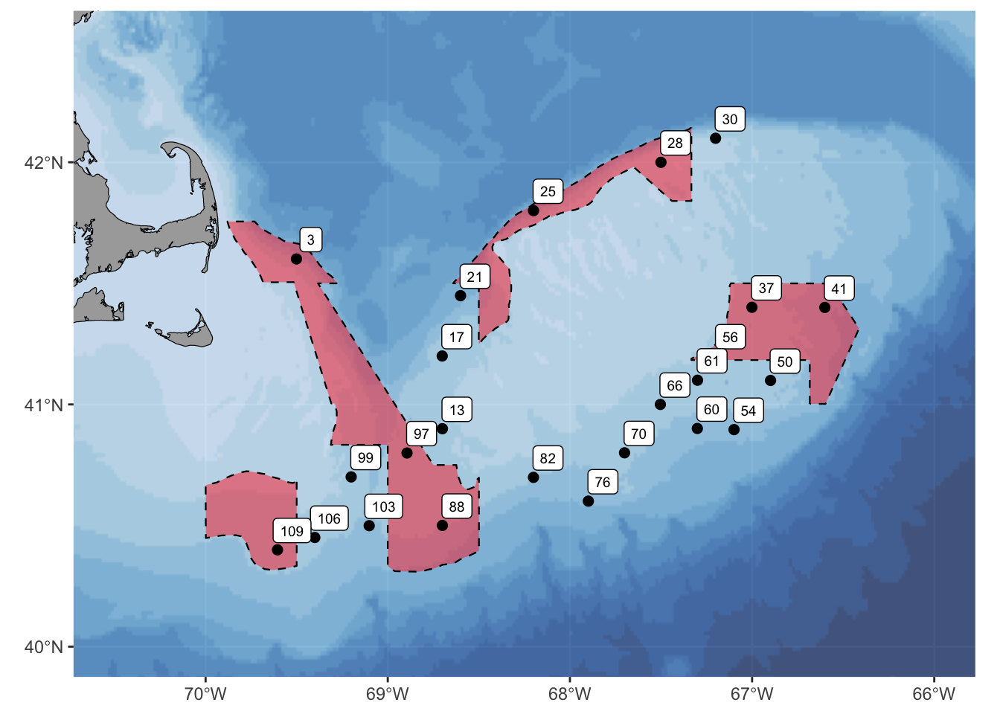</p>
</div>
</div>
</section>
</section>
<section id="the-end" class="level2">
<h2 class="anchored" data-anchor-id="the-end">The end!</h2>
<p>Thanks so much for viewing! Please feel free to reach out to me at <code>dylan.titmuss@whoi.edu</code> with any questions or other thoughts. :)</p>
</section>

</main>
<!-- /main column -->
<script id="quarto-html-after-body" type="application/javascript">
window.document.addEventListener("DOMContentLoaded", function (event) {
  const toggleBodyColorMode = (bsSheetEl) => {
    const mode = bsSheetEl.getAttribute("data-mode");
    const bodyEl = window.document.querySelector("body");
    if (mode === "dark") {
      bodyEl.classList.add("quarto-dark");
      bodyEl.classList.remove("quarto-light");
    } else {
      bodyEl.classList.add("quarto-light");
      bodyEl.classList.remove("quarto-dark");
    }
  }
  const toggleBodyColorPrimary = () => {
    const bsSheetEl = window.document.querySelector("link#quarto-bootstrap");
    if (bsSheetEl) {
      toggleBodyColorMode(bsSheetEl);
    }
  }
  toggleBodyColorPrimary();  
  const icon = "";
  const anchorJS = new window.AnchorJS();
  anchorJS.options = {
    placement: 'right',
    icon: icon
  };
  anchorJS.add('.anchored');
  const clipboard = new window.ClipboardJS('.code-copy-button', {
    target: function(trigger) {
      return trigger.previousElementSibling;
    }
  });
  clipboard.on('success', function(e) {
    // button target
    const button = e.trigger;
    // don't keep focus
    button.blur();
    // flash "checked"
    button.classList.add('code-copy-button-checked');
    var currentTitle = button.getAttribute("title");
    button.setAttribute("title", "Copied!");
    let tooltip;
    if (window.bootstrap) {
      button.setAttribute("data-bs-toggle", "tooltip");
      button.setAttribute("data-bs-placement", "left");
      button.setAttribute("data-bs-title", "Copied!");
      tooltip = new bootstrap.Tooltip(button, 
        { trigger: "manual", 
          customClass: "code-copy-button-tooltip",
          offset: [0, -8]});
      tooltip.show();    
    }
    setTimeout(function() {
      if (tooltip) {
        tooltip.hide();
        button.removeAttribute("data-bs-title");
        button.removeAttribute("data-bs-toggle");
        button.removeAttribute("data-bs-placement");
      }
      button.setAttribute("title", currentTitle);
      button.classList.remove('code-copy-button-checked');
    }, 1000);
    // clear code selection
    e.clearSelection();
  });
  function tippyHover(el, contentFn) {
    const config = {
      allowHTML: true,
      content: contentFn,
      maxWidth: 500,
      delay: 100,
      arrow: false,
      appendTo: function(el) {
          return el.parentElement;
      },
      interactive: true,
      interactiveBorder: 10,
      theme: 'quarto',
      placement: 'bottom-start'
    };
    window.tippy(el, config); 
  }
  const noterefs = window.document.querySelectorAll('a[role="doc-noteref"]');
  for (var i=0; i<noterefs.length; i++) {
    const ref = noterefs[i];
    tippyHover(ref, function() {
      // use id or data attribute instead here
      let href = ref.getAttribute('data-footnote-href') || ref.getAttribute('href');
      try { href = new URL(href).hash; } catch {}
      const id = href.replace(/^#\/?/, "");
      const note = window.document.getElementById(id);
      return note.innerHTML;
    });
  }
  const findCites = (el) => {
    const parentEl = el.parentElement;
    if (parentEl) {
      const cites = parentEl.dataset.cites;
      if (cites) {
        return {
          el,
          cites: cites.split(' ')
        };
      } else {
        return findCites(el.parentElement)
      }
    } else {
      return undefined;
    }
  };
  var bibliorefs = window.document.querySelectorAll('a[role="doc-biblioref"]');
  for (var i=0; i<bibliorefs.length; i++) {
    const ref = bibliorefs[i];
    const citeInfo = findCites(ref);
    if (citeInfo) {
      tippyHover(citeInfo.el, function() {
        var popup = window.document.createElement('div');
        citeInfo.cites.forEach(function(cite) {
          var citeDiv = window.document.createElement('div');
          citeDiv.classList.add('hanging-indent');
          citeDiv.classList.add('csl-entry');
          var biblioDiv = window.document.getElementById('ref-' + cite);
          if (biblioDiv) {
            citeDiv.innerHTML = biblioDiv.innerHTML;
          }
          popup.appendChild(citeDiv);
        });
        return popup.innerHTML;
      });
    }
  }
});
</script>
</div> <!-- /content -->


</body></html>